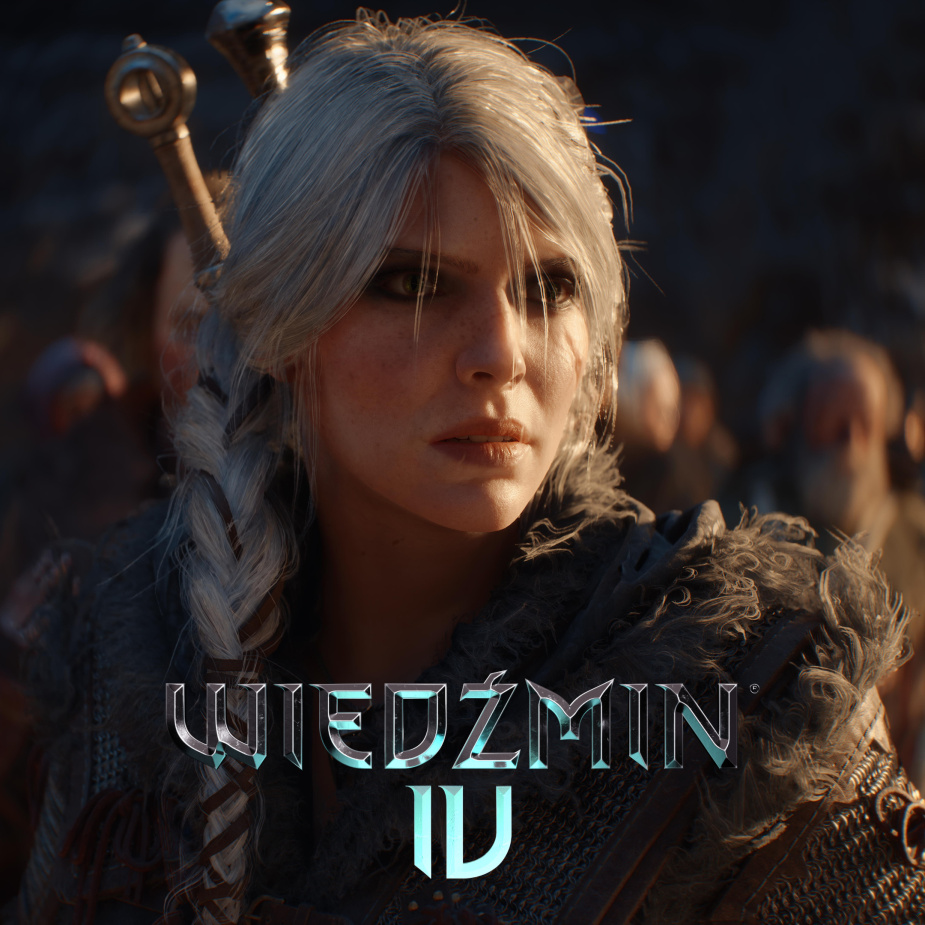

Wiedźmin 4
Uwielbiana przez graczy seria gier o Geralcie z Rivii doczeka się czwartej części. Oto co o niej wiemy:
- Gra będzie wykorzystywać Unreal Engine 5
- Geralt zostanie zastąpiony przez Ciri, która stanie się główną bohaterką, ale nie oznacza to, że nie pojawi się w grze
- Premiery nie możemy spodziewać się przed 2027 rokiem
